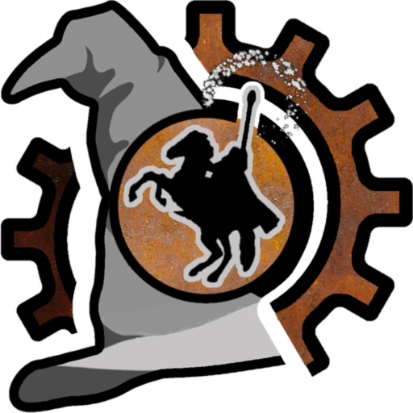

Pack editor
Open one or many Packs at once, navigate them as a tree, and add, extract, rename, duplicate or delete files in bulk.

Rusted PackFile ManagerA native Rust + Qt6 reimplementation of PackFile Manager. Open, inspect, edit and save Packs for every Total War since Empire, with first-class editors for tables, locs, scripts, animations, portrait settings, models and more.
Supports Pharaoh Dynasties • Pharaoh • Warhammer 3 • Troy • Three Kingdoms • Warhammer 1 & 2 • Thrones of Britannia • Attila • Rome 2 • Shogun 2 • Napoleon • Empire
Built for serious modders. Every editor exists because someone needed it.
Open one or many Packs at once, navigate them as a tree, and add, extract, rename, duplicate or delete files in bulk.
Schema-aware grid for every supported game. Lookups, references, sorting, filtering, copy/paste from spreadsheets, TSV import & export.
Full localisation editing with TSV round-tripping and side-by-side reference to the vanilla source text.
Catches invalid references, datacore mistakes, missing locs, broken portrait variants, animation gaps and dozens of other classes of mod bugs before the game does.
Pattern or regex across the whole pack — or across vanilla and parent mods too — with one-shot or interactive replace.
Knows about vanilla data and parent mods. Detects ITM/ITNR rows, conflicting files and unresolved references; powers reference lookups everywhere else.
Project-style workspaces per game, with import/export, asset folders, templates, and one-click install to the game's data folder.
Strips ITM rows, datacore deletes, empty files, unused portrait variants and modding-tool byproducts to keep your final pack lean.
Generate, share and apply mod translations through the Total War Translation Hub, automatically detected by Runcher at launch.
RigidModel viewer, AnimPack & AnimFragment editors, Portrait Settings, ESF, BMD, UIC, audio banks, CA_VP8 video, embedded text editor with KDE syntax highlighting.
Schemas for every supported game ship with the program and update over the air. Patches let you tweak field metadata without touching the schema files.
Integrated tools for faction colour editing, unit creation and translation workflows, all aware of the open Pack and its dependencies.
rpfm_server is the headless backend that powers the desktop app — and it's exposed for anything else that wants to script Total War files.
rpfm_lib + rpfm_extensions into your own Rust project — they're on crates.io.// Connect to a running rpfm_server
const ws = new WebSocket("ws://127.0.0.1:45127/ws");
ws.onmessage = (e) => {
const { id, data } = JSON.parse(e.data);
// SessionConnected, ContainerInfo, …
};
ws.onopen = () => ws.send(JSON.stringify({
id: 1,
data: { OpenPackFiles: ["/path/to/my_mod.pack"] }
}));Download the latest release zip, extract anywhere, run rpfm_ui.exe.
Install rpfm-bin from the AUR.
Install the Flatpak, or build from source — Qt6 + KDE Frameworks 6 required.
Build instructionsRead the manual, or join the modding community on Discord.
Discord